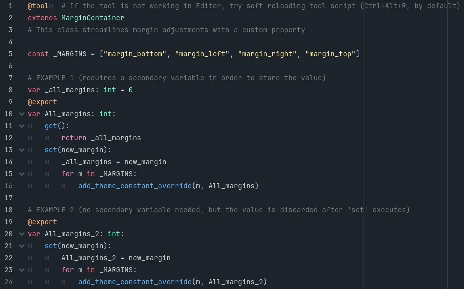

In Godot 4.3, there are two ways to make a property. Here's an example within a tool that adds a streamlined inspector value to override all margins at once:

Here it is written code as well:
```
@tool # If the tool is not working in Editor, try soft reloading tool script (Ctrl+Alt+R, by default)
extends MarginContainer
# This class streamlines margin adjustments with a custom property
const _MARGINS = ["margin_bottom", "margin_left", "margin_right", "margin_top"]
# EXAMPLE 1 (requires a secondary variable in order to store the value)
var _all_margins: int = 0
@export
var All_margins: int:
get():
return _all_margins
set(new_margin):
_all_margins = new_margin
for m in _MARGINS:
add_theme_constant_override(m, All_margins)
# EXAMPLE 2 (no secondary variable needed, but the value is discarded after &;set&; executes)
@export
var All_margins_2: int:
set(new_margin):
All_margins_2 = new_margin
for m in _MARGINS:
add_theme_constant_override(m, All_margins_2)
```1